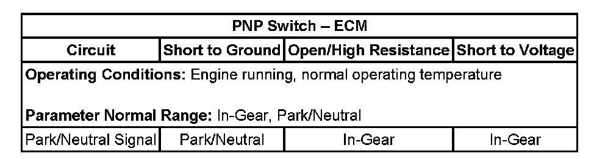

P0851
DTC P0851 or P0852
DTC Descriptors
DTC P0851
Park/Neutral Position (PNP) Switch Circuit Low Voltage
DTC P0852
Park/Neutral Position (PNP) Switch Circuit High Voltage
Diagnostic Fault Information
Perform the Diagnostic System Check - Vehicle prior to using this diagnostic procedure. Initial Inspection and Diagnostic Overview
Typical Scan Tool Data

Circuit/System Description
The transmission manual shift shaft switch assembly, also known as the internal mode switch (IMS), is a sliding contact switch attached to the manual shift shaft inside the transmission case. The Park/Neutral position (PNP) switch is integrated into the IMS and connects to the transmission control module (TCM) lead-frame through a short wire harness. The 5 inputs to the TCM from the transmission manual shift shaft switch assembly indicate the transmission gear selector lever position. This information is used for engine start enable, engine controls, as well as determining the transmission shift patterns. The state of each input is available for display on the scan tool. The five input parameters represented are signal A, signal B, signal C, signal P (parity) and signal N (Park/Neutral start signal). Park/Neutral signal is sent from the Park/Neutral switch directly to the engine control module (ECM) and is used for engine start enable. The Park/Neutral signal circuit is not connected to the TCM internally; it uses the TCM as a pass-through connector only. The ECM Park/Neutral diagnostic monitors the Park/Neutral signal circuit to detect low voltage when the ECM expects to see high voltage and high voltage when the ECM expects to see low voltage.
Conditions for Running the DTC
^ Ignition voltage is between 9-18 volts.
^ No TCM DTCs P0601, P0602, P0603, or P0604.
^ No IMS DTCs P1825 or P1915.
^ No Communication DTCs U0001, U0100, U0101, U2105, or U2106.
DTC P0851
^ No TP DTCs P0121, P0122, or P0123.
^ No OSS DTCs P0722 or P0723.
^ No MAF DTCs P0101, P0102, or P0103.
^ No MAP DTCs P0106, P0107, or P0108.
^ Engine speed is greater than 400 RPM.
Conditions for Setting the DTC
DTC P0851
The ECM detects the Park/Neutral switch signal equals 12 volts (high) when the IMS reports a Park/Neutral range for 3 seconds.
DTC P0852
The ECM detects the Park/Neutral switch signal equals 0 volts (low) when the IMS reports a Drive range for 3 seconds and the following conditions are present:
^ TP is equal to or greater than 10 percent.
^ Engine torque is equal to or greater than 75 N.m (55 lb ft).
^ Vehicle speed is equal or greater than 10 km/h (6 mph).
Action Taken When the DTC Sets
^ DTCs P0851 and P0852 are Type C DTCs.
^ The ECM uses IMS range for engine start-up.
Conditions for Clearing the DIC/DTC
DTCs P0851 and P0852 are Type C DTCs.
Diagnostic Aids
It is possible for this DTC to set due to a stack-up or misalignment issue between the IMS and the P/N Switch, where no electrical fault is present. Ensure the gear shift selector cable is properly adjusted and there are no service bulletins that address this concern before replacing parts.
Reference Information
Schematic Reference
^ Automatic Transmission Controls Schematics
^ Engine Controls Schematics
Connector End View Reference
^ Automatic Transmission Inline 16-Way Connector End View
^ Automatic Transmission Internal Connector End Views
^ Automatic Transmission Related Connector End Views
^ Engine Control Module Connector End Views
DTC Type Reference
^ Diagnostic Trouble Code (DTC) Type Definitions
^ Diagnostic Trouble Code (DTC) List/Type
Electrical Information Reference
^ Circuit Testing
^ Connector Repairs
^ Testing for Intermittent Conditions and Poor Connections
^ Wiring Repairs
Scan Tool Reference
^ Scan Tool Output Controls
^ Scan Tool Data List
^ Scan Tool Data Definitions
Circuit/System Verification
If there are any other engine or transmission related DTCs set, diagnose those DTCs first. With a scan tool observe the Park/Neutral switch parameter in the engine controls data list and move the gear shift lever from Park, to Reverse and through all the ranges and observe the parameter as you move the shift lever. The parameter should display Park/Neutral when in Park or Neutral and In-Gear when in Reverse, Drive or Drive Low. It is especially important to closely observe the Park and Neutral to Drive transitional positions while moving the shift lever and observing for possible misalignment or slack in the shifter mechanism.
Circuit/System Testing
1. Ignition OFF, transmission in Park or Neutral, disconnect the transmission 16-way connector.
2. Test for less than 1 ohm of resistance between the Park/Neutral signal circuit terminal 3 on the transmission side and the ground circuit terminal 5.
^ If greater than the specified range, test the signal circuit inside the transmission for an open/high resistance. If the circuit tests normal, test or replace the IMS.
3. Ignition On, verify the scan tool parameter Park/Neutral displays In-gear.
^ If not the specified value, test the signal circuit for a short to ground. If the circuit tests normal, replace the ECM.
4. Install a fused jumper between the signal circuit and ground. Verify the scan tool parameter Park/Neutral displays Park/Neutral.
^ If not the specified value, test the signal circuit for a short to voltage or an open/high resistance. If the circuit tests normal, replace the ECM.
Component Testing
1. Ignition OFF, transmission in Park or Neutral, disconnect the transmission 16-way connector and the IMS from the control solenoid (w/body and TCM) valve assembly.
2. Test for infinite resistance between the control solenoid (w/body and TCM) valve assembly 16-way connector pin 3 and the IMS connector pin on the control solenoid (w/body and TCM) valve assembly side with the switch in the Open position.
^ If not the specified value, test the signal circuit for a short to voltage or an open/high resistance. If the circuit tests normal, replace the control solenoid (w/body and TCM) valve assembly.
3. Test for infinite resistance between the IMS connector pin F and the IMS case ground with the switch in the Open position.
^ If not the specified value, replace the IMS.
4. Perform the Control Solenoid Valve and Transmission Control Module Assembly Inspection. Control Solenoid Valve and Transmission Control Module Assembly Inspection
Repair Instructions
Perform the Diagnostic Repair Verification after completing the diagnostic procedure. Verification Tests
1. ECM replacement. Refer to Control Module References for replacement, setup, and programming. Programming and Relearning
2. IMS replacement. Refer to Manual Shift Shaft Position Switch Replacement.
3. Control solenoid (w/body and TCM) valve assembly replacement. Refer to Control Module References for replacement, setup, and programming. Programming and Relearning